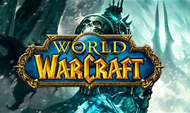
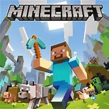

| Page:games | |
World of Warcraft | |
| 
more images |
World of Warcraft (WoW) is a massively multiplayer online role-playing game (MMORPG) released in 2004 by Blizzard Entertainment. It is the fourth released game set in the Warcraft fantasy universe. World of Warcraft takes place within the Warcraft world of Azeroth, approximately four years after the events at the conclusion of Blizzard's previous Warcraft release, Warcraft III: The Frozen Throne.Blizzard Entertainment announced World of Warcraft on September 2, 2001. The game was released on November 23, 2004, on the 10th anniversary of the Warcraft franchise. |
Minecraft | |
| 
more images |
Minecraft is a sandbox construction game created by Mojang AB founder Markus "Notch" Persson, inspired by Infiniminer, Dwarf Fortress, Dungeon Keeper, and Notch's past games Legend of the Chambered and RubyDung. Gameplay involves players interacting with the game world by placing and breaking various types of blocks in a three-dimensional environment. In this environment, players can build creative structures, creations, and artwork on multiplayer servers and singleplayer worlds across multiple game modes. |